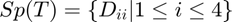

Exercice 6, Spectre d'une application linéaire
Contents
Initialisation des variables de l'énoncé:
T = 1/4*[1 -3 1 1; -3 1 1 1; 1 1 7 -9; 1 1 -9 7]
T =
0.2500 -0.7500 0.2500 0.2500
-0.7500 0.2500 0.2500 0.2500
0.2500 0.2500 1.7500 -2.2500
0.2500 0.2500 -2.2500 1.7500
6.1) Ker(T)
D'après la documentation, la fonction null retourne une base orthonormée de ker A, on aura donc que pour toute matrice A:
 et
et 
base_kerT = null(T) size_kert = size(base_kerT); dim_kerT = size_kert(1,2)
base_kerT =
0.5000
0.5000
0.5000
0.5000
dim_kerT =
1
6.2) Orthogonal H de T
On sait que pour toute matrice A, on a donc plus qu'a trouver l'image de la transposée de T or T est symétrique, on peut juste prendre
rref(T)
ans =
1 0 0 -1
0 1 0 -1
0 0 1 -1
0 0 0 0
Les colonnes pivots sont les 3 premières, on a donc qu'une base de l'image de T est formée par les 3 premières colonnes de T
base_ImT = T(1:4, 1:3);
De plus base_kerT génère entièrement Ker T. On a donc, triviallement, que l'application de tout élément de l'espace trivial par T est nul. Ce qui revient à dire que T*base_kerT = 0. Test:
T*base_kerT
ans =
1.0e-15 *
0.0833
0.3053
-0.6661
0.4441
Or on voit que ce n'est pas tellement le cas dû au degré d'incertitude imposé par matlab. On est donc obligé de considérer, de par les limites du langage/logiciel, que tout résultat dont la valeur absolue est plus petite que soit 0.
Outre cela, on a, comme dit plus haut, que . Donc les colonnes de Base_ImT forment une base de i.e. Base_ImT = H
6.3) Invariance
H est invariant par application de T si et seulement si le résultat de l'application de T à H génère aussi H, i.e. ne change rien. On doit donc avoir que l'image de la composé de H et T soit égale à l'image de H. i.e.
La matrice qui génère H est la suivante :
H = base_ImT
H =
0.2500 -0.7500 0.2500
-0.7500 0.2500 0.2500
0.2500 0.2500 1.7500
0.2500 0.2500 -2.2500
T*H
ans =
0.7500 -0.2500 -0.2500
-0.2500 0.7500 -0.2500
-0.2500 -0.2500 8.2500
-0.2500 -0.2500 -7.7500
rref(T*H) rref(H)
ans =
1 0 0
0 1 0
0 0 1
0 0 0
ans =
1 0 0
0 1 0
0 0 1
0 0 0
Leurs formes échelonnées réduites étant les mêmes, l'ensembles des solutions et sont les mêmes et ce
Les 2 matrices engendrent donc le même sous-espace. On a bien que H est invariant par T.
6.4) Spectre et Vecteurs Propres.
D'après la documentation [P, D] = eig(A) retourne P, D telles que D soit la matrices diagonales des valeurs propres de A et P la matrice des vecteurs propres. Ici T est symétrique donc orthodiagonalisable, P est donc aussi la matrice de passage (inversible) de la base canonique vers la base propre.
[P, D] = eig(T)
P =
-0.5000 -0.5000 0.7071 -0.0000
-0.5000 -0.5000 -0.7071 -0.0000
0.5000 -0.5000 -0.0000 -0.7071
0.5000 -0.5000 -0.0000 0.7071
D =
-1.0000 0 0 0
0 -0.0000 0 0
0 0 1.0000 0
0 0 0 4.0000
Si est le spectre de T et B la base propre, l'on a que: . et ( où est bien la i-eme colonne et non pas la i-eme ligne)
6.5) Orthodiagonalisation
Comme dit plus haut, T est symétrique donc orthodiagonalisable. i.e. il existe 4 vecteurs propres de normes 1 tous orthogonaux les un aux autres. On vérifie d'abord que ce n'est pas déjà le cas pour les colonnes de P, car si ça l'est, on les a déjà.
for i = 1:4 for j = (i+1):4 dot(P(:,i), P(:,j)) <= (10^(-15)) end end
ans = logical 1 ans = logical 1 ans = logical 1 ans = logical 1 ans = logical 1 ans = logical 1
On voit que les produits scalaires de tous les vecteurs de P, 2 à 2, sont bien nuls, la base B est donc déjà orthogonale. Reste à savoir si les vecteurs sont de normes 1:
for i=1:4 dot(P(:,i), P(:,i)) end
ans =
1.0000
ans =
1
ans =
1
ans =
1
On en conclut donc que la matrice P est déjà orthogonal i.e. B est déjà une base de vecteurs propres orthonormé.
6.6) Spectre d'un Polynôme appliqué a une matrice T
On sait que si est un vecteur propre de valeur propre d'une matrice , alors soit un polynôme, on a que est aussi un vecteur propre de de valeur propre .
Le spectre de  est donc .
est donc .
On pourrait dire que = , si l'on définit comme ci-dessus.